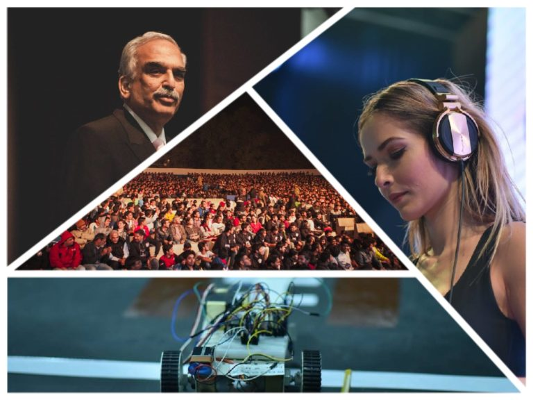

Kshitij also called KTJ, is the annual techno-management festival of one of India’s premier technical institutions, the IIT Kharagpur. Kshitij’s journey started in 2004, from then its aim is to provide the technically inclined youth’s generation a national-level platform, where they can show their talents and expertise and would be recognized and rewarded. Since its early years, Kshitij developed exponentially, it gets an overpowering response from the students from various famous technical institutes and educational communities everywhere throughout the world. Not only from India but students from foreign countries are getting attracted toward Kshitij and are actively participating in its events creating a more competitive, challenging and developing environment.
I
; ;
;
Recently Kshitij’s 16th release had been held from 19th to 21st January 2019. In this edition, Kshitij’s gets an all-over interest of more than 70,000 students from various technical institutes. And a total of Rs. 55 lacs offered as prize money. The Seventeenth release of Kshitij is scheduled from 18th to 20th January 2020. Registrations will start soon.
FOLLLOWING ARE THE IMAGE LINKS FOR REGISTRATION AND DETAILS:

E N D
CONTACT US